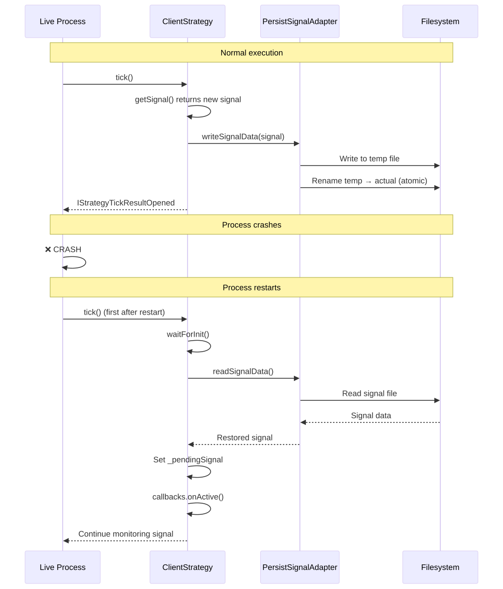

This guide explains how to transition from backtesting to real trading using Live Trading mode in backtest-kit. You'll learn about continuous execution, crash recovery, and safe state management.
Live Trading mode executes strategies in an infinite loop, processing real-time data and managing open positions with crash-resistant state protection.
| Characteristic | Live Mode | Backtest Mode |
|---|---|---|
| Execution Pattern | Infinite while(true) loop |
Finite iteration through timestamps |
| Time Progression | new Date() on each tick |
Historical Date from frame service |
| Signal Processing | Only tick() |
tick() + backtest() fast-forward |
| Persistence | Enabled (crash recovery) | Disabled |
| Event Queue | Limited (MAX_EVENTS=25) | Unlimited |
| Tick Pause | TICK_TTL (1 min + 1 ms) | None (immediate) |
| Termination | Never (requires manual stop) | When timestamps exhausted |
For live trading you need valid API keys from a cryptocurrency exchange.
Create a .env file:
# API credentials
BINANCE_API_KEY=your_api_key_here
BINANCE_API_SECRET=your_api_secret_here
# Mode configuration
ENVIRONMENT=production
LOG_LEVEL=info
Important:
.env to version controlimport ccxt from "ccxt";
import { addExchange } from "backtest-kit";
addExchange({
exchangeName: "binance-live",
getCandles: async (symbol, interval, since, limit) => {
const exchange = new ccxt.binance({
apiKey: process.env.BINANCE_API_KEY,
secret: process.env.BINANCE_API_SECRET,
enableRateLimit: true, // Important for live trading!
});
const ohlcv = await exchange.fetchOHLCV(
symbol,
interval,
since.getTime(),
limit
);
return ohlcv.map(([timestamp, open, high, low, close, volume]) => ({
timestamp, open, high, low, close, volume
}));
},
formatPrice: async (symbol, price) => {
const exchange = new ccxt.binance();
const market = await exchange.loadMarkets();
return exchange.priceToPrecision(symbol, price);
},
formatQuantity: async (symbol, quantity) => {
const exchange = new ccxt.binance();
const market = await exchange.loadMarkets();
return exchange.amountToPrecision(symbol, quantity);
},
});
Key differences from backtest:
enableRateLimit: true - prevents exchange banspriceToPrecision() and amountToPrecision() - comply with exchange rulesThe run method returns an async generator that yields every opened and closed signal:
import { Live } from "backtest-kit";
console.log("Starting live trading...");
for await (const result of Live.run("BTCUSDT", {
strategyName: "macd-crossover",
exchangeName: "binance-live",
})) {
if (result.action === "opened") {
console.log("✓ New position opened:");
console.log(` Direction: ${result.signal.position}`);
console.log(` Entry: ${result.signal.priceOpen}`);
console.log(` Take Profit: ${result.signal.priceTakeProfit}`);
console.log(` Stop Loss: ${result.signal.priceStopLoss}`);
// Send notification (email, Telegram, etc.)
await sendNotification(`Opened ${result.signal.position} position at ${result.signal.priceOpen}`);
}
if (result.action === "closed") {
console.log("✓ Position closed:");
console.log(` Reason: ${result.closeReason}`);
console.log(` PNL: ${result.pnl.pnlPercentage.toFixed(2)}%`);
console.log(` Exit price: ${result.currentPrice}`);
// Log trade results
await logTrade({
symbol: result.symbol,
pnl: result.pnl.pnlPercentage,
reason: result.closeReason,
});
}
}
Note: The generator never completes - runs until manual stop or process termination.
The background method runs live trading in the background, returning a cancel function:
import { Live, listenSignalLive } from "backtest-kit";
// Setup event listeners
listenSignalLive((event) => {
console.log(`[${event.action}] ${event.symbol} @ ${event.currentPrice}`);
if (event.action === "opened") {
console.log(` Position opened: ${event.signal.position}`);
}
if (event.action === "closed") {
console.log(` PNL: ${event.pnl.pnlPercentage.toFixed(2)}%`);
}
});
// Start in background
const cancel = Live.background("BTCUSDT", {
strategyName: "macd-crossover",
exchangeName: "binance-live",
});
console.log("Live trading started in background");
console.log("Press Ctrl+C to stop");
// Handle graceful shutdown
process.on("SIGINT", async () => {
console.log("\nStopping live trading...");
cancel();
// Wait for active positions to close
await new Promise(resolve => setTimeout(resolve, 5000));
console.log("Live trading stopped");
process.exit(0);
});
One of the most powerful features of Live mode is automatic state recovery after process crashes.

| Signal State | Persisted? | Storage |
|---|---|---|
idle |
❌ No | No data |
scheduled |
✅ Yes | PersistScheduleAdapter |
opened |
✅ Yes | PersistSignalAdapter |
active |
✅ Yes | PersistSignalAdapter |
closed |
❌ No | Position completed |
cancelled |
❌ No | Signal cancelled |
The persistence system uses atomic file writes to prevent corruption during crashes:
// Internal implementation (simplified)
async function writeSignalData(signal) {
// 1. Serialize to JSON
const json = JSON.stringify(signal);
// 2. Write to temp file
const tempPath = `./data/signals/${symbol}-${strategy}.json.tmp`;
await fs.writeFile(tempPath, json);
// 3. Atomic rename
const actualPath = `./data/signals/${symbol}-${strategy}.json`;
await fs.rename(tempPath, actualPath); // Atomic operation!
// If crash occurs during write,
// temp file remains orphaned,
// but original file remains intact
}
Key guarantees:
import { Live } from "backtest-kit";
// Stop strategy from generating new signals
await Live.stop("BTCUSDT", "macd-crossover");
// Active positions complete normally
// New signals are no longer generated
Stop behavior:
_isStopped flag in ClientStrategygetSignal() calls on subsequent ticksimport { Live, listenDoneLive } from "backtest-kit";
// Start live trading
const cancel = Live.background("BTCUSDT", {
strategyName: "macd-crossover",
exchangeName: "binance-live",
});
// Listen for completion event
listenDoneLive((event) => {
console.log(`Live trading completed: ${event.symbol}`);
console.log(`Strategy: ${event.strategyName}`);
// Generate final report
Live.dump(event.symbol, event.strategyName);
});
// Handle OS signals
process.on("SIGINT", () => {
console.log("\nReceived SIGINT, stopping...");
cancel(); // Initiates graceful shutdown
});
process.on("SIGTERM", () => {
console.log("\nReceived SIGTERM, stopping...");
cancel();
});
import { Live } from "backtest-kit";
// Periodically check statistics
setInterval(async () => {
const stats = await Live.getData("BTCUSDT", "macd-crossover");
console.log("=== Real-Time Statistics ===");
console.log(`Sharpe Ratio: ${stats.sharpeRatio.toFixed(2)}`);
console.log(`Win Rate: ${(stats.winRate * 100).toFixed(1)}%`);
console.log(`Total PNL: ${stats.totalPNL.toFixed(2)}%`);
console.log(`Total Trades: ${stats.totalTrades}`);
console.log(`Winning Trades: ${stats.winningTrades}`);
console.log(`Losing Trades: ${stats.losingTrades}`);
console.log(`Max Drawdown: ${stats.maxDrawdown.toFixed(2)}%`);
}, 60000); // Every minute
Important: Uses limited queue (MAX_EVENTS=25) to prevent memory leaks during infinite execution.
import { Live, listenDoneLive } from "backtest-kit";
// Generate report on stop
listenDoneLive(async (event) => {
console.log("Generating final report...");
// Save to default path: ./dump/live/macd-crossover.md
await Live.dump(event.symbol, event.strategyName);
// Or to custom path
await Live.dump(event.symbol, event.strategyName, "./reports/live");
console.log("Report saved");
});
import { Live } from "backtest-kit";
const markdown = await Live.getReport("BTCUSDT", "macd-crossover");
console.log(markdown);
// Send report via email
await sendEmailReport(markdown);
import { Live } from "backtest-kit";
// Get all active live trading instances
const instances = await Live.list();
console.log("=== Active Live Trading Instances ===");
instances.forEach(instance => {
console.log(`ID: ${instance.id}`);
console.log(`Symbol: ${instance.symbol}`);
console.log(`Strategy: ${instance.strategyName}`);
console.log(`Status: ${instance.status}`); // "idle" | "running" | "done"
console.log("---");
});
import { config } from "dotenv";
import ccxt from "ccxt";
import {
setLogger,
setConfig,
addExchange,
addStrategy,
Live,
listenSignalLive,
listenDoneLive,
listenError,
} from "backtest-kit";
// Load environment variables
config();
// Setup logger
setLogger({
log: (topic, ...args) => console.log(`[LOG] ${topic}:`, ...args),
debug: (topic, ...args) => {
if (process.env.LOG_LEVEL === "debug") {
console.debug(`[DEBUG] ${topic}:`, ...args);
}
},
info: (topic, ...args) => console.info(`[INFO] ${topic}:`, ...args),
warn: (topic, ...args) => console.warn(`[WARN] ${topic}:`, ...args),
});
// Global configuration
setConfig({
CC_PERCENT_SLIPPAGE: 0.1,
CC_PERCENT_FEE: 0.1,
CC_SCHEDULE_AWAIT_MINUTES: 120,
CC_MAX_SIGNAL_LIFETIME_MINUTES: 480, // 8 hours
});
// Register exchange
addExchange({
exchangeName: "binance-live",
getCandles: async (symbol, interval, since, limit) => {
const exchange = new ccxt.binance({
apiKey: process.env.BINANCE_API_KEY,
secret: process.env.BINANCE_API_SECRET,
enableRateLimit: true,
});
const ohlcv = await exchange.fetchOHLCV(
symbol,
interval,
since.getTime(),
limit
);
return ohlcv.map(([timestamp, open, high, low, close, volume]) => ({
timestamp, open, high, low, close, volume
}));
},
formatPrice: async (symbol, price) => {
const exchange = new ccxt.binance();
await exchange.loadMarkets();
return exchange.priceToPrecision(symbol, price);
},
formatQuantity: async (symbol, quantity) => {
const exchange = new ccxt.binance();
await exchange.loadMarkets();
return exchange.amountToPrecision(symbol, quantity);
},
});
// Register strategy
addStrategy({
strategyName: "production-strategy",
interval: "15m",
getSignal: async (symbol) => {
// Fetch candles for analysis
const candles = await getCandles(symbol, "15m", 50);
const currentPrice = candles[candles.length - 1].close;
// Your trading logic here
// Example: check if conditions met
// return signal or null
return null; // Or return signal
},
callbacks: {
onOpen: async (symbol, signal, price, backtest) => {
console.log(`✓ POSITION OPENED: ${signal.position} @ ${price}`);
await sendTelegramNotification(`Opened ${signal.position} position at ${price}`);
},
onClose: async (symbol, signal, price, backtest) => {
console.log(`✓ POSITION CLOSED @ ${price}`);
// Log to database
await logToDatabase({ symbol, signal, price });
},
},
});
// Handle errors
listenError((error) => {
console.error("❌ ERROR:", error);
// Send alert
sendErrorAlert(error);
});
// Monitor signals
listenSignalLive((event) => {
if (event.action === "active") {
console.log(`→ Monitoring: ${event.symbol} @ ${event.currentPrice}`);
console.log(` TP progress: ${event.percentTp.toFixed(1)}%`);
console.log(` SL distance: ${event.percentSl.toFixed(1)}%`);
}
});
// Completion listener
listenDoneLive(async (event) => {
console.log("Live trading completed");
await Live.dump(event.symbol, event.strategyName);
});
// Start live trading
console.log("Starting production live trading...");
const cancel = Live.background("BTCUSDT", {
strategyName: "production-strategy",
exchangeName: "binance-live",
});
// Graceful shutdown
process.on("SIGINT", () => {
console.log("\nStopping...");
cancel();
setTimeout(() => process.exit(0), 10000); // 10 seconds to complete
});
process.on("SIGTERM", () => {
console.log("\nReceived SIGTERM...");
cancel();
setTimeout(() => process.exit(0), 10000);
});
console.log("Live trading active. Press Ctrl+C to stop.");
// Use minimal position sizes for testing
addSizing({
sizingName: "conservative",
getQuantity: async (symbol, signal, currentPrice) => {
return 0.001; // Minimal size for BTC
},
});
// Binance Testnet
const exchange = new ccxt.binance({
apiKey: process.env.TESTNET_API_KEY,
secret: process.env.TESTNET_API_SECRET,
urls: {
api: 'https://testnet.binance.vision/api',
},
enableRateLimit: true,
});
// Send notifications on critical events
listenSignalLive((event) => {
if (event.action === "closed" && event.pnl.pnlPercentage < -5) {
sendCriticalAlert(`Large loss: ${event.pnl.pnlPercentage.toFixed(2)}%`);
}
});
listenError((error) => {
sendCriticalAlert(`Execution error: ${error.message}`);
});
import { addRisk } from "backtest-kit";
addRisk({
riskName: "production-risk",
maxConcurrentPositions: 1, // Only one position at a time
validations: [
{
validate: ({ pendingSignal }) => {
// Maximum 2% risk per trade
const slDistance = Math.abs(
(pendingSignal.priceStopLoss - pendingSignal.priceOpen) /
pendingSignal.priceOpen
) * 100;
if (slDistance > 2) {
throw new Error(`SL distance ${slDistance.toFixed(2)}% > 2%`);
}
},
note: "Maximum 2% risk per trade",
},
],
});
# View saved signals
ls -la ./data/signals/
# Read saved signal
cat ./data/signals/BTCUSDT-production-strategy.json
setLogger({
log: (topic, ...args) => {
const timestamp = new Date().toISOString();
console.log(`[${timestamp}] [LOG] ${topic}:`, ...args);
},
debug: (topic, ...args) => {
const timestamp = new Date().toISOString();
console.debug(`[${timestamp}] [DEBUG] ${topic}:`, ...args);
},
info: (topic, ...args) => {
const timestamp = new Date().toISOString();
console.info(`[${timestamp}] [INFO] ${topic}:`, ...args);
},
warn: (topic, ...args) => {
const timestamp = new Date().toISOString();
console.warn(`[${timestamp}] [WARN] ${topic}:`, ...args);
},
});
After setting up live trading: